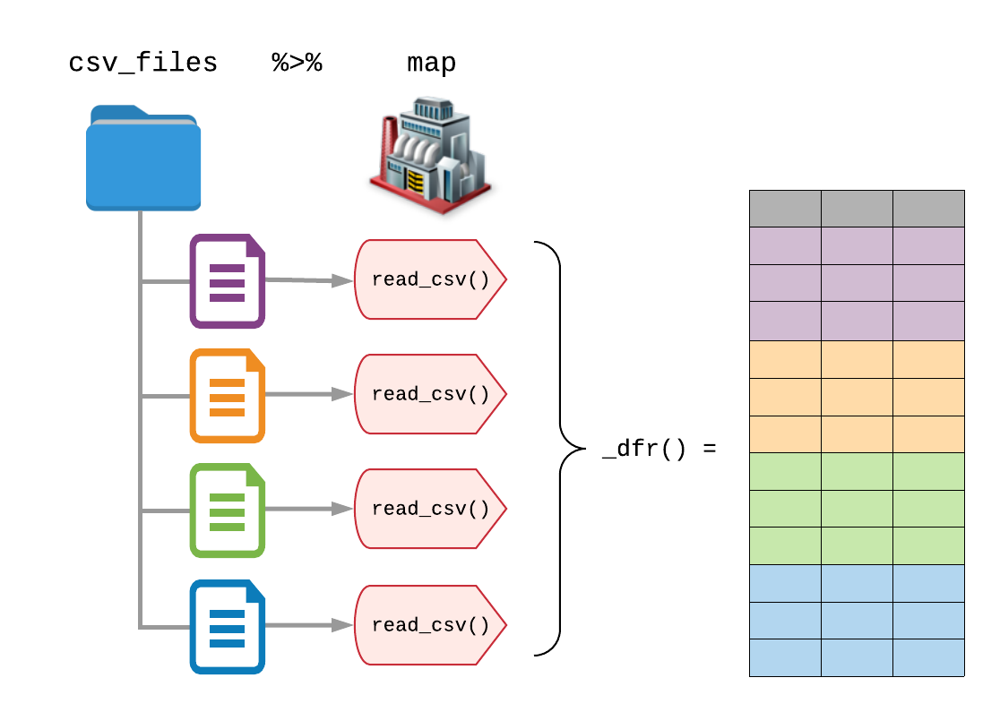

This post demonstrates how you can use two packages from the tidyverse – purrr and readr – to read a list of CSV files into a single data frame in R. We’ll also use a newer package called fs for file system operations.
# Install packages if you need to
install.packages(c("tidyverse", "fs"))
library(tidyverse) # attaches purrr and readr
library(fs)Suppose we have a directory of CSV files that contain data that are regularly shaped, meaning that columns in each data set are all the same, or at least the columns that overlap are the same.
We would like to read in all of the CSV files inside the directory and build one large dataset by merging each of the smaller data sets together.
To make the example more concrete, we’ll use a dataset provided by the Government of Ireland showing the yearly number of e-referrals per hospital department, where the data from each year reside in individual CSV files.
We’ve collected the data for you, which you can download as a zipfile here, or you can download the original CSV files from data.gov.ie.
Once we’ve extracted the zip file or downloaded the CSV files a single folder, we store the location of the unzipped folder in data_dir.
data_dir <- "ie-general-referrals-by-hospital"We can then list the CSV files using fs::dir_ls().
fs::dir_ls(data_dir)## ie-general-referrals-by-hospital/README.txt
## ie-general-referrals-by-hospital/general-referrals-by-hospital-department-2015.csv
## ie-general-referrals-by-hospital/general-referrals-by-hospital-department-2016.csv
## ie-general-referrals-by-hospital/general-referrals-by-hospital-department-2017.csv
## ie-general-referrals-by-hospital/general-referrals-by-hospital-department-2018.csvNotice that there is an additional README.txt file that we don’t want to import, so we limit our directory listing to just the CSV files, i.e. the files that end with .csv.
csv_files <- fs::dir_ls(data_dir, regexp = "\\.csv$")
csv_files## ie-general-referrals-by-hospital/general-referrals-by-hospital-department-2015.csv
## ie-general-referrals-by-hospital/general-referrals-by-hospital-department-2016.csv
## ie-general-referrals-by-hospital/general-referrals-by-hospital-department-2017.csv
## ie-general-referrals-by-hospital/general-referrals-by-hospital-department-2018.csvEach of the CSV files can be individual read in using readr::read_csv().
Let’s read one file as an example:
readr::read_csv(csv_files[1])## # A tibble: 837 × 6
## Month_Year Hospital_Name Hospital_ID Hospital_Departm… ReferralType
## <chr> <chr> <dbl> <chr> <chr>
## 1 Aug-15 AMNCH 1049 Paediatric ENT General Ref…
## 2 Aug-15 AMNCH 1049 Paediatric Gastr… General Ref…
## 3 Aug-15 AMNCH 1049 Paediatric Gener… General Ref…
## 4 Aug-15 Bantry General Hospital 704 Gastroenterology General Ref…
## 5 Aug-15 Bantry General Hospital 704 General Medicine General Ref…
## 6 Aug-15 Bantry General Hospital 704 General Surgery General Ref…
## 7 Aug-15 Bantry General Hospital 704 Medicine for the… General Ref…
## 8 Aug-15 Bantry General Hospital 704 Outreach Dermato… General Ref…
## 9 Aug-15 Bantry General Hospital 704 Outreach Orthopa… General Ref…
## 10 Aug-15 Bantry General Hospital 704 Outreach Surgical General Ref…
## # … with 827 more rows, and 1 more variable: TotalReferrals <dbl>
To read all of the files in the directory, we map read_csv() onto the list of files, using purrr::map().
But knowing that each list element will be a tibble (or data.frame) and that each data frame has the same columns, we can use purrr’s typed functions to return a single data frame containing each of the imported CSV files using purrr::map_dfr().
The additional _dfr() tells purrr to return a data frame (df) by row-binding each element together (r).
(It’s the same as calling map() %>% bind_rows().)
csv_files %>%
map_dfr(read_csv)## # A tibble: 17,405 × 6
## Month_Year Hospital_Name Hospital_ID Hospital_Departm… ReferralType
## <chr> <chr> <dbl> <chr> <chr>
## 1 Aug-15 AMNCH 1049 Paediatric ENT General Ref…
## 2 Aug-15 AMNCH 1049 Paediatric Gastr… General Ref…
## 3 Aug-15 AMNCH 1049 Paediatric Gener… General Ref…
## 4 Aug-15 Bantry General Hospital 704 Gastroenterology General Ref…
## 5 Aug-15 Bantry General Hospital 704 General Medicine General Ref…
## 6 Aug-15 Bantry General Hospital 704 General Surgery General Ref…
## 7 Aug-15 Bantry General Hospital 704 Medicine for the… General Ref…
## 8 Aug-15 Bantry General Hospital 704 Outreach Dermato… General Ref…
## 9 Aug-15 Bantry General Hospital 704 Outreach Orthopa… General Ref…
## 10 Aug-15 Bantry General Hospital 704 Outreach Surgical General Ref…
## # … with 17,395 more rows, and 1 more variable: TotalReferrals <dbl>Notice that the Month_Year column was imported as a character instead of a date-time.
We can modify the arguments of read_csv() inside the call to map_dfr(), which sets the arguments for each CSV import.
csv_files %>%
map_dfr(read_csv, col_types = cols("Month_Year" = col_date(format = "%b-%y")))## # A tibble: 17,405 × 6
## Month_Year Hospital_Name Hospital_ID Hospital_Departm… ReferralType
## <date> <chr> <dbl> <chr> <chr>
## 1 2015-08-01 AMNCH 1049 Paediatric ENT General Ref…
## 2 2015-08-01 AMNCH 1049 Paediatric Gastr… General Ref…
## 3 2015-08-01 AMNCH 1049 Paediatric Gener… General Ref…
## 4 2015-08-01 Bantry General Hospital 704 Gastroenterology General Ref…
## 5 2015-08-01 Bantry General Hospital 704 General Medicine General Ref…
## 6 2015-08-01 Bantry General Hospital 704 General Surgery General Ref…
## 7 2015-08-01 Bantry General Hospital 704 Medicine for the… General Ref…
## 8 2015-08-01 Bantry General Hospital 704 Outreach Dermato… General Ref…
## 9 2015-08-01 Bantry General Hospital 704 Outreach Orthopa… General Ref…
## 10 2015-08-01 Bantry General Hospital 704 Outreach Surgical General Ref…
## # … with 17,395 more rows, and 1 more variable: TotalReferrals <dbl>Warning messages:
1: In rbind(names(probs), probs_f) :
number of columns of result is not a multiple of vector length (arg 1)
2: In rbind(names(probs), probs_f) :
number of columns of result is not a multiple of vector length (arg 1)Setting read_csv options for all of the files almost works.
Unfortunately, the format of the Month_Year column changed in 2016 from Jan-15 to Jan-2016, so the Month_Year column is NA for the years 2016 and 2017.
To fix this, the easiest solution is to import as a character and use lubridate to parse the date-times, as readr’s col_date() format only allows for one format.
library(lubridate)
csv_files %>%
map_dfr(read_csv) %>%
mutate(Month_Year = myd(Month_Year, truncated = 1))## # A tibble: 17,405 × 6
## Month_Year Hospital_Name Hospital_ID Hospital_Departm… ReferralType
## <date> <chr> <dbl> <chr> <chr>
## 1 2015-08-01 AMNCH 1049 Paediatric ENT General Ref…
## 2 2015-08-01 AMNCH 1049 Paediatric Gastr… General Ref…
## 3 2015-08-01 AMNCH 1049 Paediatric Gener… General Ref…
## 4 2015-08-01 Bantry General Hospital 704 Gastroenterology General Ref…
## 5 2015-08-01 Bantry General Hospital 704 General Medicine General Ref…
## 6 2015-08-01 Bantry General Hospital 704 General Surgery General Ref…
## 7 2015-08-01 Bantry General Hospital 704 Medicine for the… General Ref…
## 8 2015-08-01 Bantry General Hospital 704 Outreach Dermato… General Ref…
## 9 2015-08-01 Bantry General Hospital 704 Outreach Orthopa… General Ref…
## 10 2015-08-01 Bantry General Hospital 704 Outreach Surgical General Ref…
## # … with 17,395 more rows, and 1 more variable: TotalReferrals <dbl>Finally, we may sometimes wish to include an indicator variable that tracks the source of each row, for example to keep track of the file from which the data was collected.
To do this, we set the .id parameter of map_dfr() to the name of the indicator variable, and the source file name will be included in the final data set.
csv_files %>%
map_dfr(read_csv, .id = "source") %>%
mutate(Month_Year = myd(Month_Year, truncated = 1))## # A tibble: 17,405 × 7
## source Month_Year Hospital_Name Hospital_ID Hospital_Depart… ReferralType
## <chr> <date> <chr> <dbl> <chr> <chr>
## 1 ie-genera… 2015-08-01 AMNCH 1049 Paediatric ENT General Ref…
## 2 ie-genera… 2015-08-01 AMNCH 1049 Paediatric Gast… General Ref…
## 3 ie-genera… 2015-08-01 AMNCH 1049 Paediatric Gene… General Ref…
## 4 ie-genera… 2015-08-01 Bantry Gener… 704 Gastroenterology General Ref…
## 5 ie-genera… 2015-08-01 Bantry Gener… 704 General Medicine General Ref…
## 6 ie-genera… 2015-08-01 Bantry Gener… 704 General Surgery General Ref…
## 7 ie-genera… 2015-08-01 Bantry Gener… 704 Medicine for th… General Ref…
## 8 ie-genera… 2015-08-01 Bantry Gener… 704 Outreach Dermat… General Ref…
## 9 ie-genera… 2015-08-01 Bantry Gener… 704 Outreach Orthop… General Ref…
## 10 ie-genera… 2015-08-01 Bantry Gener… 704 Outreach Surgic… General Ref…
## # … with 17,395 more rows, and 1 more variable: TotalReferrals <dbl>This post provides one small example of how you can combine fs, purrr, and readr to find data files in a directory and read them all together into a single data frame in R, ready for analysis or processing with tools from the tidyverse.
Here’s the code we used, all in one place.
data_dir %>%
dir_ls(regexp = "\\.csv$") %>%
map_dfr(read_csv, .id = "source") %>%
mutate(Month_Year = myd(Month_Year, truncated = 1))We use dir_ls() to list the files in our data directory, data_dir, and then combine map_dfr() and read_csv() to read in the CSV files we found.
We use the .id argument of map_dfr() to track the source of each row in the final data frame, which we then begin to process using dplyr.
Keep in mind, this same pattern can easily be used with other data types, such as SAS or Excel files, with just a few modifications – like replacing the regexp and using haven::read_sas() or readxl::read_xlsx() in place of read_csv.
In future posts, we’ll also look at other ways we merge a folder of data files besides “stapling” them together row-wise with map_dfr().
ref: https://www.gerkelab.com/blog/2018/09/import-directory-csv-purrr-readr/